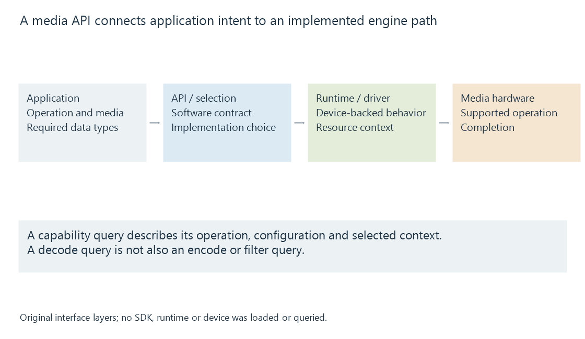

How media APIs connect applications to hardware
A media acceleration API connects an application’s requested video operation to a compatible runtime, driver and device configuration with defined buffers and completion behavior.
An acceleration API turns an application's requested media operation into work on a supported device path. Between the call and the hardware are implementation and driver layers that define how configurations, buffers and completion are represented.
This is why the API, runtime and media engine need to be identified separately.
The call passes through an implementation

The application calls an interface it was built to use. A library or dispatcher can select an implementation, which communicates through the relevant driver path to the device.
A development SDK supplies interfaces and development material. The usable execution path also needs the runtime/driver and the exposed hardware operation. Installing development headers does not add a missing hardware decoder.
Emby's platform documentation provides product context for supported routes. The device capabilities are then a separate configuration question.
A query describes an operation and its conditions
This original readable capability example is a teaching structure, not the wire format of a vendor API:
{
"device": "model-adapter-A",
"operation": "decode",
"codec": "hevc",
"profile": "Main 10",
"chroma": "4:2:0",
"bitDepth": 10,
"maximumWidth": 3840,
"maximumHeight": 2160,
"outputLayout": "P010"
}
It describes one decoded-video path. It does not describe encoding, every video filter or the availability of another adapter.
An output encoder needs its own target query. A filter needs its accepted input/output relationship. A complete job combines those compatible operations rather than treating the first successful query as a device-wide “yes.”
Buffers and completion are part of the interface
The API exposes or accepts frame storage under a defined memory model. Some paths use system memory, others device surfaces, and others can import compatible shared resources.
The consumer needs the correct device and frame context, layout and completion dependencies. A surface handle meaningful to one context is not automatically usable by an unrelated context.
Asynchronous calls also need their specified completion behavior. An accepted operation can still be working after control returns to the CPU.
Several names can describe one route
| Name category | Example of the fact it conveys |
|---|---|
| Codec | The compressed format being processed |
| API | The interface used to request processing |
| Runtime/backend | The implementation of those calls |
| Driver | The device/operating-system execution path |
| Media engine | The hardware carrying out the specialized work |
| Application wrapper | The integration selected by the media program |
An Intel media operation can be exposed through Intel VPL or through a supported VA-API path. The interfaces differ while the underlying hardware can overlap.
See Also
- Fixed-function media engines
- Intel VPL and the oneVPL name
- NVDEC and CUVID API names
- AMD Advanced Media Framework (AMF)
- Video Acceleration API (VA-API)
- Direct3D 11 video acceleration (D3D11VA)